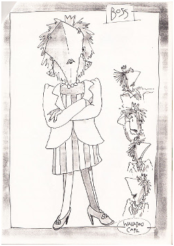

The Wakadoo Café in Canberra
By
Patricia Edgar
Posted
Monday, 24 June 2013

As our parliamentary players have switched into vaudeville and politicians are vying to take centre stage, grab attention and play the fool, I am reminded strongly of a program I produced 20 years ago called Lift-Off which included a puppet segment called the Wakadoo Café. It was a realm where human feelings and relationships, in all their complexity, were explored through the Boss, Lonely, Nearly, Zelda, Cook, the Wolf and the Three Pigs, with their foibles and anxieties. It was designed to teach three to eight-year-olds about emotional intelligence.
The program was based upon the theory by eminent Harvard Professor Howard Gardner who argued that intelligence was not a unitary concept concerned only with the RRRs. He identified seven intelligences which should be developed in young children if they were to grow into well rounded human beings. They included inter-personal and intra-personal intelligence, that is the understanding of our relationships with others and our understanding of ourselves. These are intelligences that seem to be singularly lacking in many of our politicians.
To teach these concepts to young audiences we settled on puppets who worked in the Wakadoo Café and sang about their concerns. They each represented a particular personality trait and interacted with one another from that perspective.
Bob Ellis was the main writer who also composed the lyrics to the music of Chris Neal. Terry Denton drew the characters and the now famous sculptor Ron Mueck created them as three dimensional puppets. The creative team was remarkably prescient in designing for the Wakadoo Café the characters who seem to inhabit Parliament house today.
Boss, who ran the café, is a dead ringer for Julia Gillard; she's got the shape and is dressed like the PM, even down to the large beads around her neck. She was definitely in charge.
I'm boss of this Café.
There'll be no mistaking
I give out the orders
And no lunch breaking.
The eager beaver called Nearly has to be Wayne Swan:
Sometimes when you're down
And your day is going brown
And you don't know who you are
What's the journey and how far
It's important that you know whatever miles you go
Whatever skies you scan, I can, I can
I can do it in my way.
Wolf looks strangely like Bob Carr and has a mellifluous tone reminiscent of our roving Minister:
I'm Wolf, I'm a star
I'm a moving and a shaking.
I've stormed the heights of stardom
I've been a tour de force and I've been forced to tour
In the life of a showman I've found illusion is all.
The Three Pigs Boris, Morris and Doris could be played by any number of the characters in Parliament House. Their refrain is familiar:
The face you wear when meeting
The people you are greeting
Is not the face beneath the face you wear…
The face I wear is useful because it's so untruthful.
I smile and chat but underneath I sneer.
The me that's me, you never see,
The face beneath the face through which I peer,
I wonder how I'd look if I was here.
Joe Hockey could certainly be Cook:
The skin we're covered in
is insulation for the world we're in…
It doesn't matter what shape you're in,
What really counts is beneath the skin.
Then there is a character called Lonely, who always sits at the bar
'waiting for a friend to call my name'
He does conjure up Kevin Rudd in appearance and voice.
I used to be someone once but I got lost, lost.
I wasn't quite the classroom dunce but I was tossed
Between the devil and the deep blue sea
Every teacher's had a go at me
Learning was a river I paddled in but never crossed.
These characters struggle with their lives and their personalities but eventually they reach an understanding and conquer their weaknesses, aided by Zelda the negotiator, whom I can't seem to identify in the Canberra scenario. She sings:
Wake up gang, you're no longer in the cradle
Life's a bowl of soup and you have to seize the ladle.
You have to really mean it when you make a vow.
All together now or you'll be history and how.
Eventually Boss comes to her senses.
It's a strange old world
That we're living in
Always someone out to rule
The world's next spin.
Life of being Boss
Is pretty cruel and hard,
You lose your friends
And then you drop your guard.
I'm sorry now,
Oh so sorry now,
But I'm lost and don't know where to go.
And Lonely finally gets some friends
Now I know that I was wrong
My friends were with me all along
Oh I'm so glad to have such friends as you
In the fantasy world of Wakadoo, characters can learn the errors of their ways and life goes on in relative harmony. But not, it seems, in Canberra.
The Australian Children's Television Foundation should arrange screenings of Wakadoo in Parliament House urgently in an attempt to teach our politicians the essential skills they did not learn in early childhood. But can they grow up? Psychologists say, show me the boy and I will show you the man.
Patricia Edgar was the Founding Director of the Australian Children's Television Foundation. Her next book In Praise of Ageing will be published by Text in October
Patricia Edgar is an author, television producer and educator.